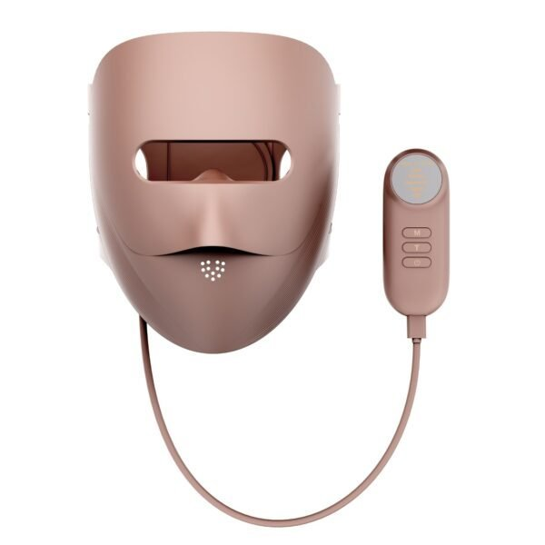
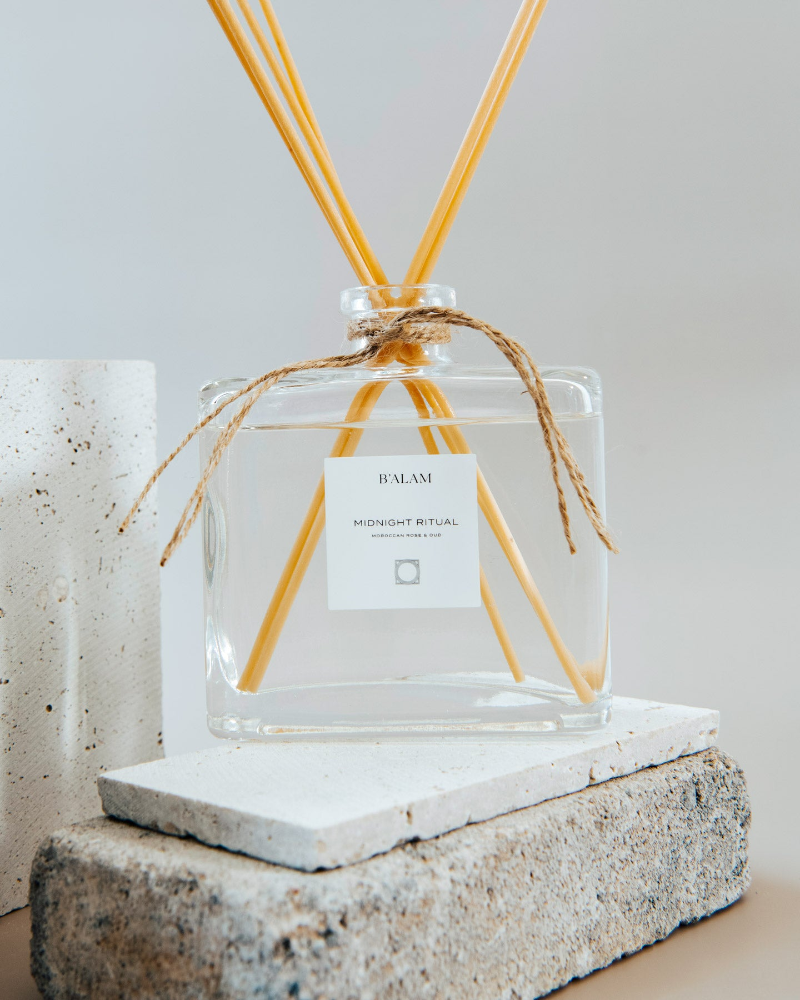
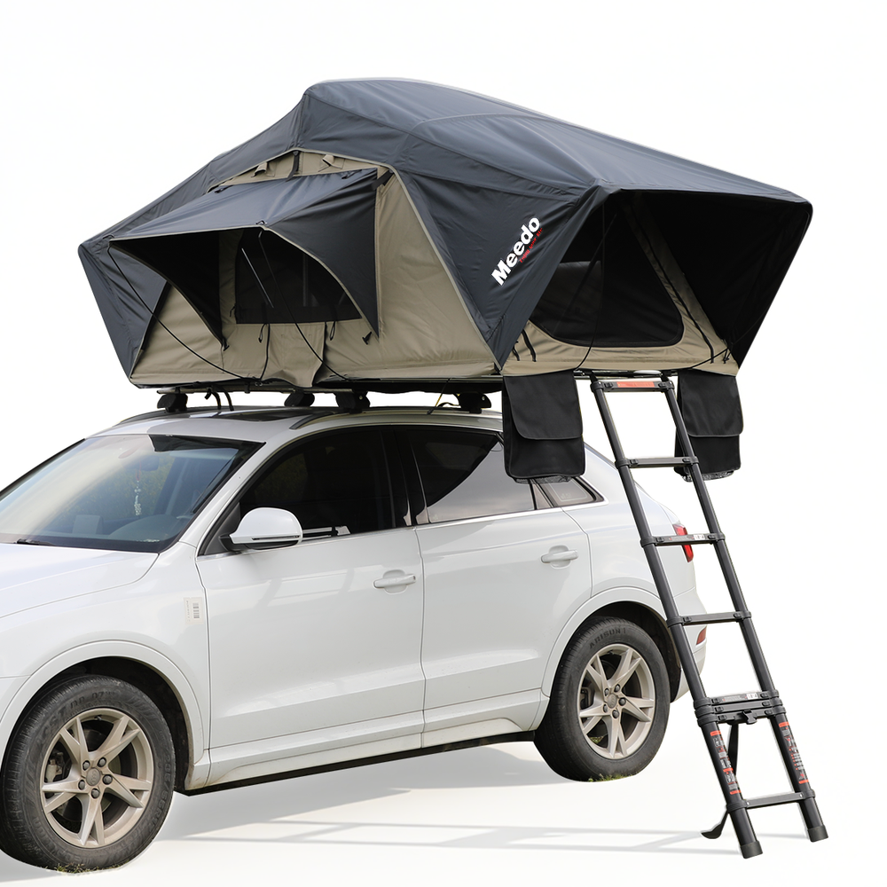
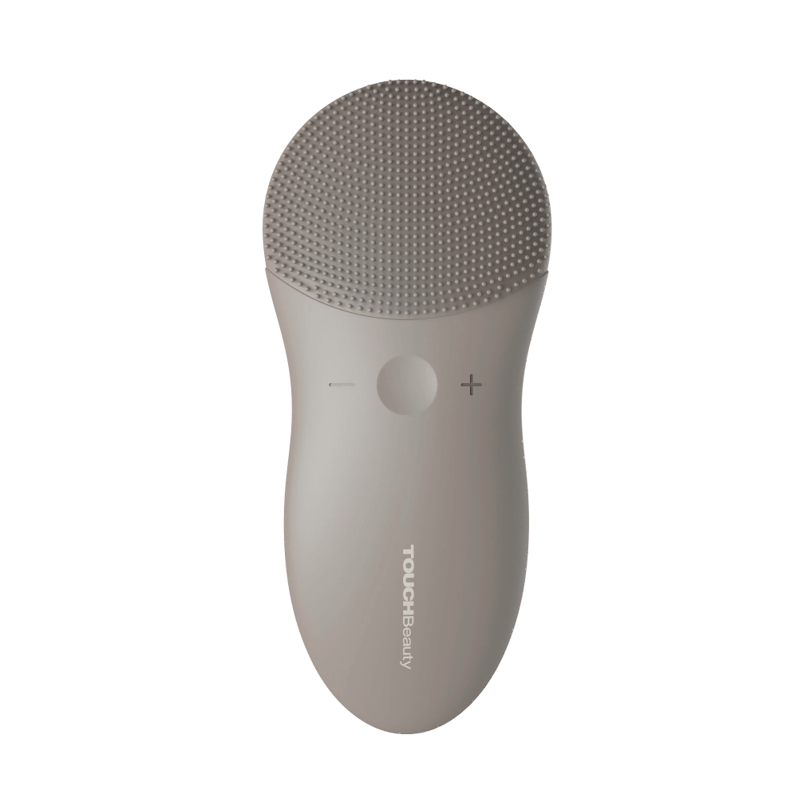
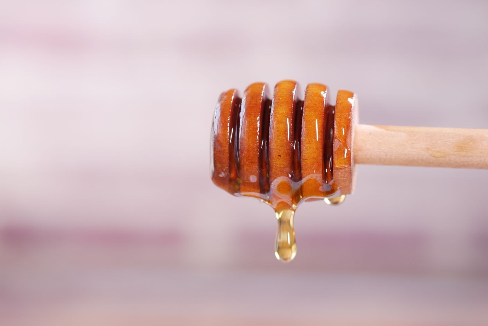
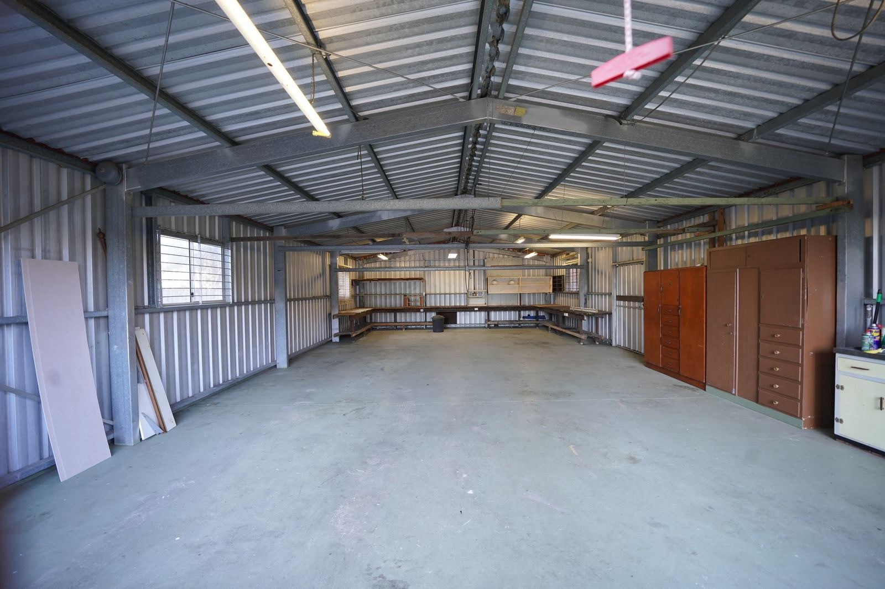
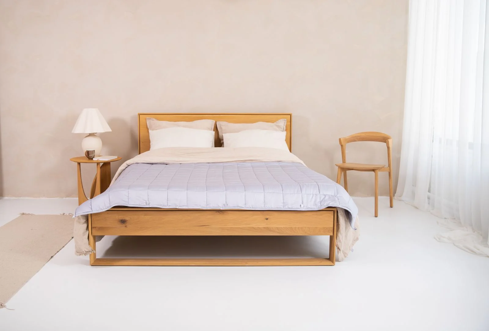
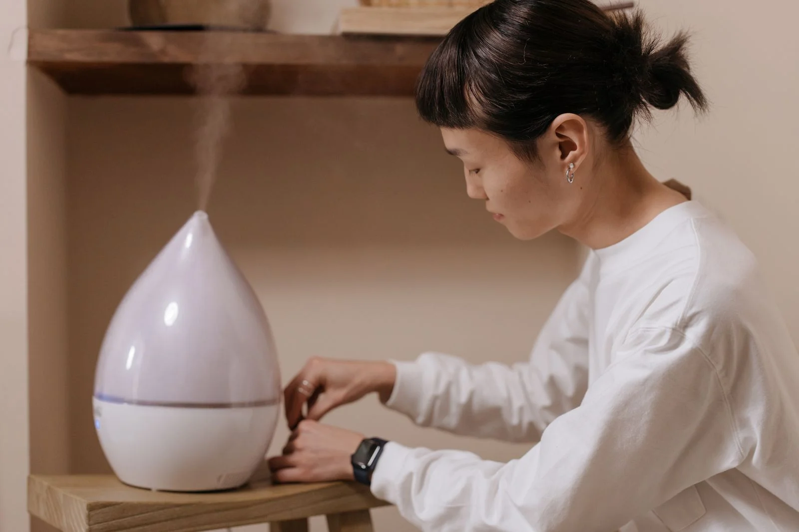
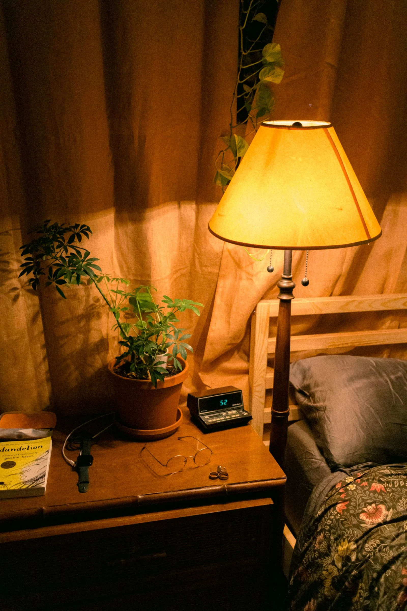
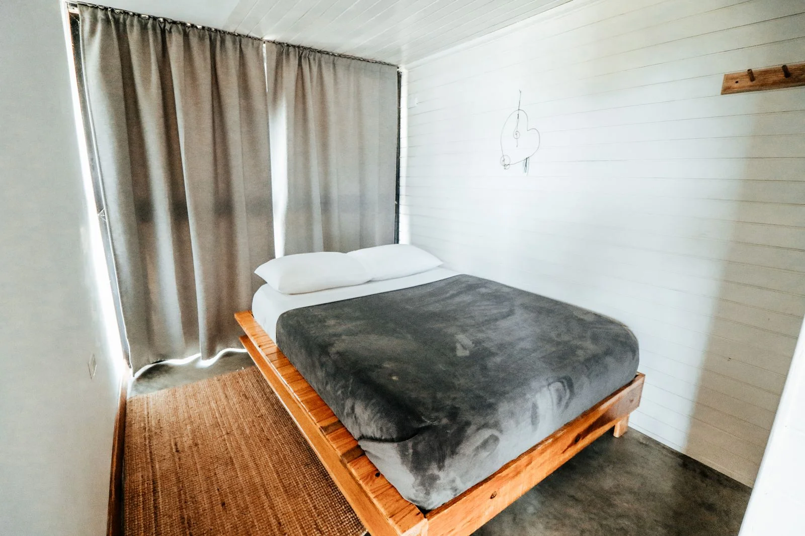

The latest
10 Mistakes First-Time International Travelers MakeOct 5, 20265 min readHow to Pack Light: The Carry-On-Only PlaybookOct 5, 20265 min readTravel Insurance: What to Actually Check Before You BuyOct 5, 20265 min readHow to Plan a 3-Day City Break on a BudgetOct 5, 20265 min readStaying Connected Abroad: eSIMs vs Roaming vs Local SIMsOct 5, 20265 min readHow to Skip the Line at Major Attractions: Booking Tickets in AdvanceOct 5, 20265 min read
Product Finds
Carefully researched products worth your money.
Product find10 Honest Product Finds Actually Worth Your MoneyWe read the fine print on dozens of products so you don’t have to. These ten made the cut: real products from real brands, each one earning its spot by being genuinely useful — not by paying for…Product findKlook Travel Activities: Is Booking Through Klook Worth It?Planning the fun part of a trip — the theme parks, the day tours, the viewpoint tickets, the airport transfers — used to mean juggling a dozen different operator websites, each with its own booking…Product findGeek Crate Subscription Box: Is the Geek Mystery Box Worth It?Subscription boxes had their moment around 2016. Everyone launched one, most were terrible, and the biggest name in geek boxes — Loot Crate — went bankrupt. Twice. Product findAfrican Net Sponge: The Exfoliating Bath Upgrade Worth Knowing AboutHere’s something most people outside West Africa have never tried: a long, stretchy nylon net — known as sapo in Nigeria or jampe in Senegal — that replaces your washcloth, loofah, and back scrubber…Product findPluginsForWP Review: Premium WordPress Plugins at 95% Off — Worth It?Premium WordPress plugins are expensive. A single popular plugin can run $59–$199 per year, and a serious site needs several — SEO, caching, forms, page builder, security.
Product findAfrican Net Sponge: The Exfoliating Bath Upgrade Worth Knowing AboutHere’s something most people outside West Africa have never tried: a long, stretchy nylon net — known as sapo in Nigeria or jampe in Senegal — that replaces your washcloth, loofah, and back scrubber…Product findPluginsForWP Review: Premium WordPress Plugins at 95% Off — Worth It?Premium WordPress plugins are expensive. A single popular plugin can run $59–$199 per year, and a serious site needs several — SEO, caching, forms, page builder, security. Product findAlphaBiolabs DNA Test Kits: An Honest Review of Their Home TestingNeeding a paternity answer, or wanting to check a health trait from home, is stressful enough without wondering whether the company behind the kit is legitimate.
Product findAlphaBiolabs DNA Test Kits: An Honest Review of Their Home TestingNeeding a paternity answer, or wanting to check a health trait from home, is stressful enough without wondering whether the company behind the kit is legitimate.

Product findColorDiamonds IGI LED Mask: Is This At-Home LED Mask Worth It?LED light therapy used to mean booking clinic sessions at premium prices or buying a $500+ device from a big beauty brand.Product findTOEFL/IELTS Prep Online: Is Zebra Education's BestMyTest Worth It?Preparing for the TOEFL or IELTS is stressful enough without expensive prep courses piled on top.Product findZac's Sweet Shop: Is It Worth Ordering? An Honest ReviewThere’s a specific disappointment in ordering fancy sweets online: gorgeous packaging, gas-station taste inside.Product findDeme by Gabriella: Is This Designer Occasionwear Worth the Price? An Honest LookEvery woman has faced the same problem: an event that matters, a closet full of nothing right, and the dread of showing up in the same dress as someone else.Product findAbbode Custom Embroidery: Is It Worth It for Personalized Gifts? An Honest ReviewFinding a gift that doesn’t feel generic is genuinely hard. Flowers die, gift cards feel lazy, and most “personalized” products online are mass-produced items with a name slapped on.Product findRe/Done Jeans: Worth the Premium? An Honest LookJeans are jeans — until they’re $265+. Re/Done is the LA brand that made “repurposed vintage Levi’s, deconstructed and resewn” into a luxury category, hand-cut from actual vintage denim and sold at…Product findCopperJoe Compression Sleeves: Do They Actually Help? An Honest ReviewIf you’ve got an achy knee, a cranky elbow, or feet that hurt by the end of the day, you’ve probably seen the ads.
Product findB'alam Candles & Diffusers: Worth It for a Calmer Home?Walk into someone’s home and it smells amazing — not perfumey, not overpowering, just calm and intentional — and you’ll want to know their secret.Product findEvago Travel Search: Is This AI Flight Tool Worth Using?Booking a flight in 2026 shouldn’t feel like a part-time job. You check the airline site, then a comparison site, then another comparison site, each showing a different price for the same seat — and…Product findEonon Android Car Stereo: Worth the Upgrade? An Honest LookThere’s a special frustration in driving a perfectly good car with a stereo from 2011. No CarPlay, no backup camera, Bluetooth that connects when it feels like it.Product findBASE-K Scalp Care: Does It Actually Work for Thinning Hair?Here’s an uncomfortable truth about hair loss products: most of them are aimed at the hair, when the real problem starts underneath it.Product findEdify CBD Gummies: Worth Trying? An Honest Look at the Kentucky Hemp BrandThe CBD market has a trust problem. Shelves and websites are flooded with gummies that make vague wellness promises, hide their lab results, and leave you guessing what’s actually in the jar.Product findScorpify Phone Cases: Are They Actually Protective? An Honest ReviewYour phone case has one job: keep your phone alive when gravity wins. But most “cute” cases fail at that job, and most “rugged” cases look like they belong on a construction site.Product findAfrican Net Sponge: The Exfoliating Bath Upgrade Worth Knowing AboutHere’s something most people outside West Africa have never tried: a long, stretchy nylon net — known as sapo in Nigeria or jampe in Senegal — that replaces your washcloth, loofah, and back scrubber…Product findPluginsForWP Review: Premium WordPress Plugins at 95% Off — Worth It?Premium WordPress plugins are expensive. A single popular plugin can run $59–$199 per year, and a serious site needs several — SEO, caching, forms, page builder, security.
Product findMeedo Designs Rooftop Tents: An Honest Look at the Apollo LineSleeping on the ground in a tent you have to pitch every night gets old fast — especially when the ground is rocky, wet, or home to things that crawl.Product findMinteefy Glass Wall Art: Is Printed Glass Worth It? An Honest LookYou’ve probably had the same experience: a canvas print that looked great online arrives, looks fine for a year, then quietly fades into the background — colors dull, corners sag, and eventually you…Product findAlphaBiolabs DNA Test Kits: An Honest Review of Their Home TestingNeeding a paternity answer, or wanting to check a health trait from home, is stressful enough without wondering whether the company behind the kit is legitimate.
Product findTouchBeauty Sonic Facial Brush: Worth It? An Honest LookIf you wash your face with just your hands and cleanser, you’re doing okay. But plenty of people notice their skin never feels quite clean enough — makeup lingers along the hairline, pores feel…
Product findBee Inspired Goods: Honey, Candles & Gifts — An Honest LookSome shops sell products; Bee Inspired Goods sells the whole autumn-candle-season feeling.Product findSkin Beauty Solutions: Professional Skincare — An Honest LookThe skincare aisle has a noise problem: a thousand serums, every one “clinically proven,” most differing only in packaging.Product findBusinessAnywhere: Start a US Company Online — An Honest LookStarting a company used to mean a lawyer, a stack of state forms, and a registered agent you found through a Google rabbit hole.Product findPeachSkinSheets: Are the 'Softest Sheets Ever' Worth It?Sheets are the most underrated part of sleep. People will spend $2,000 on a mattress and then sleep on sandpaper-rough bargain sheets that pill in a month.Product findAllDiabetic Supply Store (DiabetesStore.com): An Honest LookManaging diabetes means a steady, never-ending stream of supplies — test strips, meters, sensors, and all the unglamorous medical essentials that insurance doesn’t always cover gracefully.
Product findArmadillo Tough Garage Cabinets: An Honest Look at the Fold-Up Storage SystemGarage storage is a special kind of miserable purchase. The cheap flat-pack cabinets swell and rust, the expensive custom systems cost as much as a used car, and everything in between takes a full…Product findBonne et Filou Dog Macarons: Are Gourmet Dog Treats Worth It?Most dog treats come in a crinkly bag, look like brown kibble nuggets, and smell like the inside of a rendering plant.The Findhawk Standard
What “honest product finds” actually means here.
No sponsored picks
No brand can pay for placement, a ranking, or a kind word. When we cover a product, it’s because it suits the buyer.
Plain-English research
We read the specs, the fine print, and independent reviews — then explain what actually predicts quality.
Reader-supported
The guides are free. When you buy through our links we may earn a commission at no extra cost to you — how it works.
Buying Guides
Deep dives that explain what actually matters.
0110 Mistakes First-Time International Travelers MakeOct 5, 20265 min read02How to Pack Light: The Carry-On-Only PlaybookOct 5, 20265 min read03Travel Insurance: What to Actually Check Before You BuyOct 5, 20265 min read04How to Plan a 3-Day City Break on a BudgetOct 5, 20265 min read05Staying Connected Abroad: eSIMs vs Roaming vs Local SIMsOct 5, 20265 min read06How to Skip the Line at Major Attractions: Booking Tickets in AdvanceOct 5, 20265 min read07How to Find Cheap Flights: A Practical Flight-Booking GuideOct 5, 20265 min read08 Bedroom Temperature for Sleep: What the Research Actually SaysOct 5, 20264 min read17Sleep Masks: How to Pick One That Doesn't Hurt (and Actually Blocks Light)Oct 5, 20264 min read18Weighted Blankets: The Honest Guide (Weight, Benefits, and Who Should Skip Them)Oct 5, 20264 min read19Sunrise Alarm Clocks and Wake-Up Lights: Are They Worth It?Oct 5, 20264 min read20Blackout Curtains for Better Sleep: What Actually Blocks LightOct 5, 20264 min read21
Bedroom Temperature for Sleep: What the Research Actually SaysOct 5, 20264 min read17Sleep Masks: How to Pick One That Doesn't Hurt (and Actually Blocks Light)Oct 5, 20264 min read18Weighted Blankets: The Honest Guide (Weight, Benefits, and Who Should Skip Them)Oct 5, 20264 min read19Sunrise Alarm Clocks and Wake-Up Lights: Are They Worth It?Oct 5, 20264 min read20Blackout Curtains for Better Sleep: What Actually Blocks LightOct 5, 20264 min read21 Best Mattress for Combination Sleepers Who Change Position All NightOct 5, 20268 min read24King vs Queen vs Cal King: Which Mattress Size Should You Actually Buy?Oct 5, 20268 min read25
Best Mattress for Combination Sleepers Who Change Position All NightOct 5, 20268 min read24King vs Queen vs Cal King: Which Mattress Size Should You Actually Buy?Oct 5, 20268 min read25 Best Mattress for Couples: Motion Isolation That Actually WorksOct 5, 20268 min read26
Best Mattress for Couples: Motion Isolation That Actually WorksOct 5, 20268 min read26 How to Choose a Pillow by Sleep PositionOct 5, 20267 min read27
How to Choose a Pillow by Sleep PositionOct 5, 20267 min read27 Memory Foam vs Down vs Latex Pillows: Honest ComparisonOct 5, 20268 min read28
Memory Foam vs Down vs Latex Pillows: Honest ComparisonOct 5, 20268 min read28 Best Pillow for Side Sleepers: Loft, Firmness & What to AvoidOct 5, 20268 min read29
Best Pillow for Side Sleepers: Loft, Firmness & What to AvoidOct 5, 20268 min read29 Do You Need a Mattress Topper? When It Helps and When It's a WasteOct 5, 20268 min read30Mattress Warranties: What's Covered, What's Not, and the Fine PrintOct 5, 20268 min read31
Do You Need a Mattress Topper? When It Helps and When It's a WasteOct 5, 20268 min read30Mattress Warranties: What's Covered, What's Not, and the Fine PrintOct 5, 20268 min read31 Mattress Trial Periods Explained: How to Actually Use Your 100 NightsOct 5, 20269 min read32
Mattress Trial Periods Explained: How to Actually Use Your 100 NightsOct 5, 20269 min read32 Saatva vs DreamCloud: Two Luxury Hybrids ComparedOct 5, 20269 min read33
Saatva vs DreamCloud: Two Luxury Hybrids ComparedOct 5, 20269 min read33 Purple vs Helix: Gel Grid vs Hybrid — Which Sleeps Better?Oct 5, 20269 min read34
Purple vs Helix: Gel Grid vs Hybrid — Which Sleeps Better?Oct 5, 20269 min read34 Nectar vs Casper: Which Memory Foam Mattress Is the Better Buy?Oct 5, 20269 min read35Are Expensive Mattresses Worth It? Where the Money Actually Goes9 min read36
Nectar vs Casper: Which Memory Foam Mattress Is the Better Buy?Oct 5, 20269 min read35Are Expensive Mattresses Worth It? Where the Money Actually Goes9 min read36 Best Mattress Under $1000: The Sweet Spot for Quality and Value8 min read37
Best Mattress Under $1000: The Sweet Spot for Quality and Value8 min read37 Best Mattress Under $500: How to Get Real Quality at a Low Price8 min read38
Best Mattress Under $500: How to Get Real Quality at a Low Price8 min read38 Latex vs Memory Foam: Pros, Cons, and Who Should Buy Which7 min read39
Latex vs Memory Foam: Pros, Cons, and Who Should Buy Which7 min read39 Pocketed Coils vs Bonnell Coils: Which Innerspring Is Worth Your Money?7 min read40
Pocketed Coils vs Bonnell Coils: Which Innerspring Is Worth Your Money?7 min read40 Memory Foam Density Explained: The Number That Predicts How Long Your Mattress Lasts7 min read41
Memory Foam Density Explained: The Number That Predicts How Long Your Mattress Lasts7 min read41 Best Cooling Mattress for Hot Sleepers: Materials That Actually Work6 min read42Best Mattress for Back Pain: What the Research Says About Firmness7 min read43
Best Cooling Mattress for Hot Sleepers: Materials That Actually Work6 min read42Best Mattress for Back Pain: What the Research Says About Firmness7 min read43 Best Mattress for Stomach Sleepers (and Why Most Mattresses Fail Them)7 min read45
Best Mattress for Stomach Sleepers (and Why Most Mattresses Fail Them)7 min read45 Best Mattress for Back Sleepers: Firmness, Support & What to Look For in 20266 min read46
Best Mattress for Back Sleepers: Firmness, Support & What to Look For in 20266 min read46 Best Mattress for Side Sleepers: What to Look for in 20267 min read47
Best Mattress for Side Sleepers: What to Look for in 20267 min read47 How to Buy a Great Mattress on a Budget (Without Getting Scammed)9 min read48
How to Buy a Great Mattress on a Budget (Without Getting Scammed)9 min read48 Mattress Firmness Explained: How to Pick the Right Firmness for Your Sleep Position8 min read49
Mattress Firmness Explained: How to Pick the Right Firmness for Your Sleep Position8 min read49 Memory Foam vs Hybrid vs Innerspring: Which Mattress Type Is Right for You?8 min read
Memory Foam vs Hybrid vs Innerspring: Which Mattress Type Is Right for You?8 min read

Box Spring vs Platform Bed: Which Foundation Your Mattress Actually NeedsOct 5, 20263 min read09New Mattress Break-In Period: How Long It Takes and What to ExpectOct 5, 20263 min read10Mattress Protectors: Are They Worth It? (Honest Answer: Yes)Oct 5, 20263 min read11When to Replace Your Mattress: 9 Signs It's Time for a New OneOct 5, 20264 min read12
Bedroom Humidifiers: Do They Actually Help You Sleep?Oct 5, 20264 min read13Exercise Timing and Sleep: Morning vs. Evening WorkoutsOct 5, 20264 min read14How to Nap Right: Length, Timing, and When Naps BackfireOct 5, 20264 min read15Blue Light and Sleep: Glasses, Settings, and the Habits That Actually MatterOct 5, 20263 min read16Bedroom Temperature for Sleep: What the Research Actually SaysOct 5, 20264 min read17Sleep Masks: How to Pick One That Doesn't Hurt (and Actually Blocks Light)Oct 5, 20264 min read18Weighted Blankets: The Honest Guide (Weight, Benefits, and Who Should Skip Them)Oct 5, 20264 min read19Sunrise Alarm Clocks and Wake-Up Lights: Are They Worth It?Oct 5, 20264 min read20Blackout Curtains for Better Sleep: What Actually Blocks LightOct 5, 20264 min read21
Do White Noise Machines Actually Help You Sleep? What to Know Before You BuyOct 5, 20264 min read22Beauty Sleep Is Real: How Sleep Affects Your Skin and a Simple Nighttime RoutineOct 5, 20264 min read23Best Mattress for Combination Sleepers Who Change Position All NightOct 5, 20268 min read24King vs Queen vs Cal King: Which Mattress Size Should You Actually Buy?Oct 5, 20268 min read25Best Mattress for Couples: Motion Isolation That Actually WorksOct 5, 20268 min read26How to Choose a Pillow by Sleep PositionOct 5, 20267 min read27Memory Foam vs Down vs Latex Pillows: Honest ComparisonOct 5, 20268 min read28Best Pillow for Side Sleepers: Loft, Firmness & What to AvoidOct 5, 20268 min read29Do You Need a Mattress Topper? When It Helps and When It's a WasteOct 5, 20268 min read30Mattress Warranties: What's Covered, What's Not, and the Fine PrintOct 5, 20268 min read31Mattress Trial Periods Explained: How to Actually Use Your 100 NightsOct 5, 20269 min read32Saatva vs DreamCloud: Two Luxury Hybrids ComparedOct 5, 20269 min read33Purple vs Helix: Gel Grid vs Hybrid — Which Sleeps Better?Oct 5, 20269 min read34Nectar vs Casper: Which Memory Foam Mattress Is the Better Buy?Oct 5, 20269 min read35Are Expensive Mattresses Worth It? Where the Money Actually Goes9 min read36Best Mattress Under $1000: The Sweet Spot for Quality and Value8 min read37Best Mattress Under $500: How to Get Real Quality at a Low Price8 min read38Latex vs Memory Foam: Pros, Cons, and Who Should Buy Which7 min read39Pocketed Coils vs Bonnell Coils: Which Innerspring Is Worth Your Money?7 min read40Memory Foam Density Explained: The Number That Predicts How Long Your Mattress Lasts7 min read41Best Cooling Mattress for Hot Sleepers: Materials That Actually Work6 min read42Best Mattress for Back Pain: What the Research Says About Firmness7 min read43
Best Mattress for Heavy People: What Actually Holds Up Over 230 Lbs7 min read44Best Mattress for Stomach Sleepers (and Why Most Mattresses Fail Them)7 min read45Best Mattress for Back Sleepers: Firmness, Support & What to Look For in 20266 min read46Best Mattress for Side Sleepers: What to Look for in 20267 min read47How to Buy a Great Mattress on a Budget (Without Getting Scammed)9 min read48Mattress Firmness Explained: How to Pick the Right Firmness for Your Sleep Position8 min read49Memory Foam vs Hybrid vs Innerspring: Which Mattress Type Is Right for You?8 min read